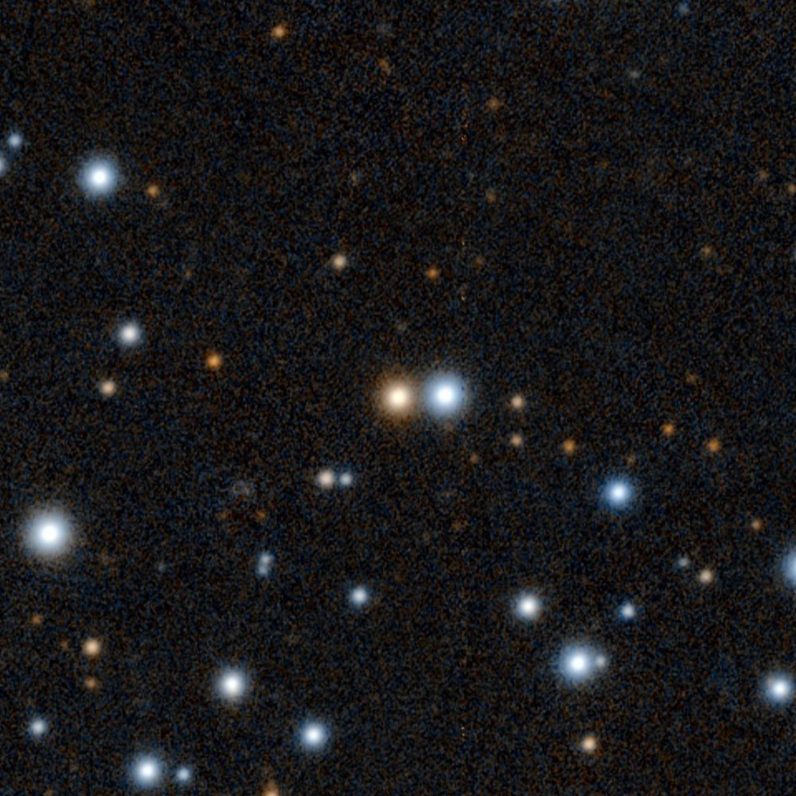
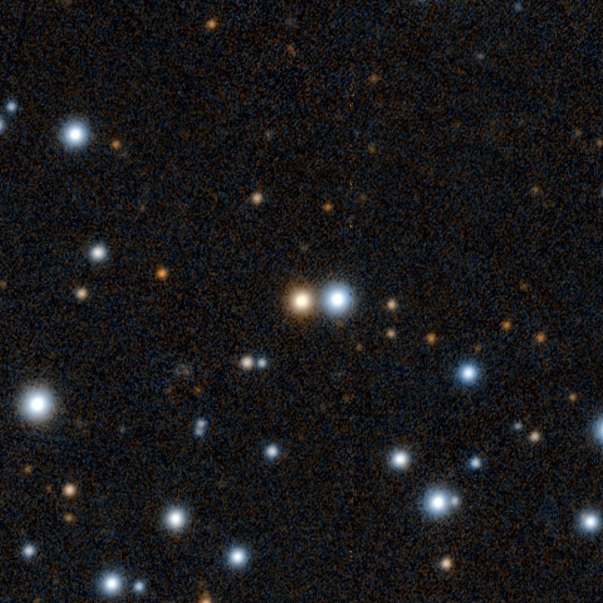
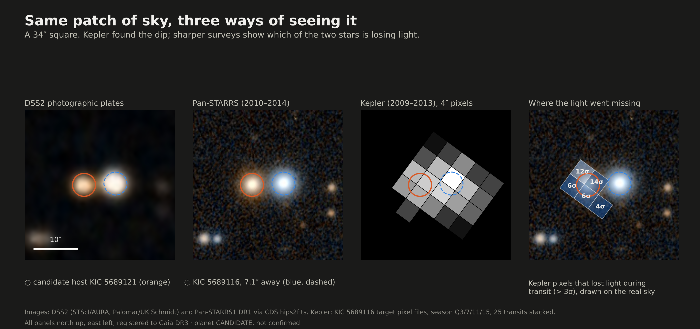
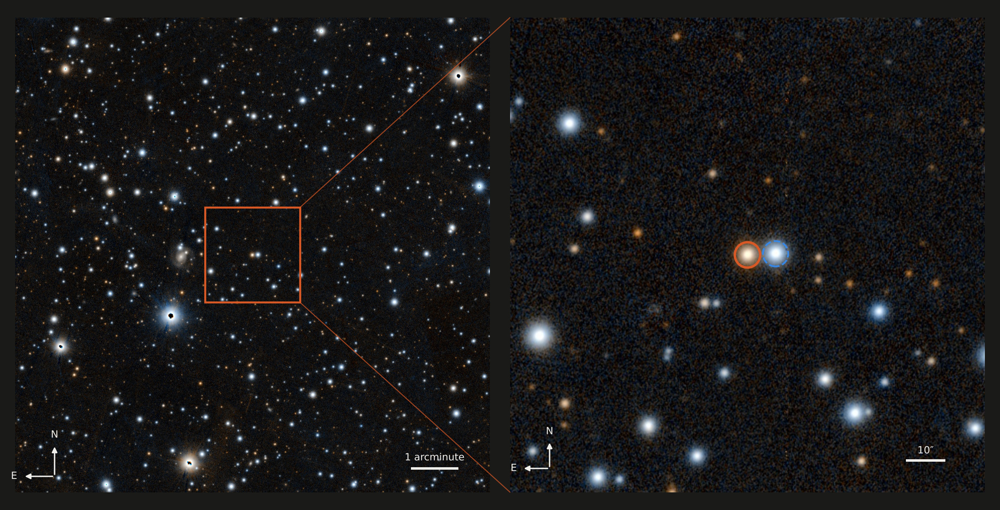
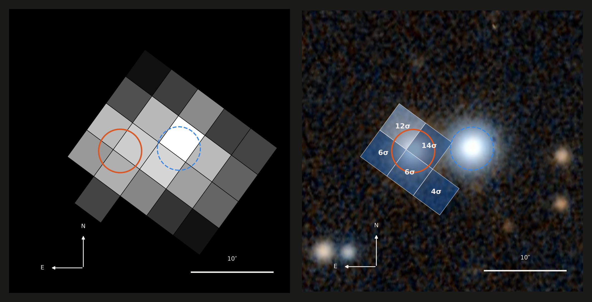
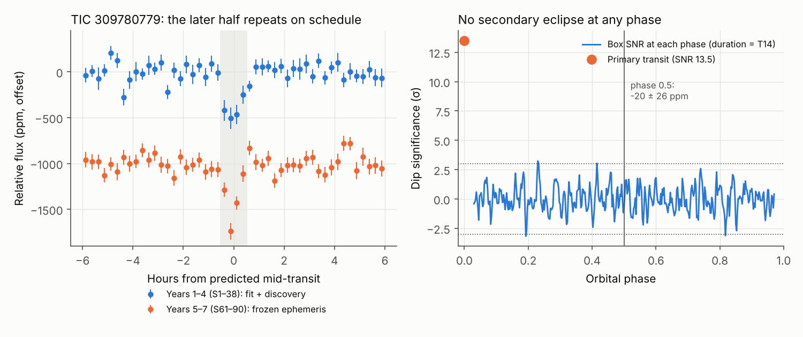

01 / Exterior
Between Earth and Neptune.
2.5–3 R⊕inferred radius
About 32,000–38,000 km across. A substantial gaseous envelope is plausible at this size; a transit alone cannot determine its composition.
Diameter / 2.5–3 × EarthMass / unmeasured
RA 285.907827°DEC +40.941988°
A possible planet in Kepler’s old light.
A 13.77-day signal that returns in held-back observations. A hidden companion still leaves the host uncertain.

Kepler Bonus recovered this star’s light from pixels downloaded for its neighbour. The method ↗
Just 7.1″ apart. Separating the stars’ blended light reveals a deeper dip on this one. The source tests ↗
13.767 days for Kepler-169 e. 13.769 here. Almost identical periods; none of their transits overlap. Timing comparison ↗
Predict the dip using earlier data. Look in four untouched quarters. Find it again.
Exported / reserved events.
Accepted / reserved after the stricter vetting cut.
Full-data bins used for the displayed fold.
The initial search reserved the last four quarters. Its fixed ephemeris recovered the signal at 5.84σ in aperture photometry, with 22 accepted events and no single event dominating. The newer full-baseline fit uses all quarters. Aperture audit / Display selection notes.
One part per million (ppm) is 0.0001% of the star’s light. Error bars show ±1σ uncertainty unless labelled otherwise. A Kepler quarter is one observing segment, usually about three months. PSF photometry separates overlapping star images; SAP adds the light inside a pixel aperture.
All charts display saved results. The full-data fold, its residuals and the event histogram summarise the same observations; they are not new fits or independent confirmations. Several source tests also share photons, so their significance cannot be multiplied together.
χ² measures disagreement with a model; a larger value means a worse fit. The associated p-values are model checks, not probabilities that a planet exists. The separate false-positive calculation depends on its assumptions and inputs.
Evidence snapshot: 11 October 2026. Full methods and qualifications ↗
This light travelled for ~972 years before Kepler recorded it in 2009–2013. A possible planet’s shadow, arriving centuries later.
Approximate, from the estimated 298 pc distance. Calculation ↗
If the signal belongs to this star, it points to a warm sub-Neptune. These artist’s interpretations use the inferred size and orbit; appearance and interior remain unknown.
About 32,000–38,000 km across. A substantial gaseous envelope is plausible at this size; a transit alone cannot determine its composition.
Its star would span about 3° in the sky—5.7 times our Sun’s apparent width. The temperature assumes no reflected light and full heat redistribution; it is not a measured surface temperature.
This cutaway imagines a fluid envelope over denser material. A gas-rich planet and a volatile-rich interior can share a similar radius. Layer thicknesses, density and surface gravity cannot be inferred without more data.
At 13.4 million km, the orbit is only 23% of Mercury’s distance from the Sun. A circular orbit gives a speed of about 71 km/s. The illustration uses perspective; the diagram below gives the scale.
T = 417.4 × (1 − A)¼ K. Full heat redistribution; atmosphere and surface temperature unknown.
a = (GM⋆P² / 4π²)⅓
0.08956 AURₚ = (Rₚ/R⋆) × R⋆
~2.5–3 R⊕S/S⊕ = (L/L☉) / a²AU
5.0397 × Earth| Fitted parameter | Median | Lower / upper uncertainty | Meaning |
|---|---|---|---|
| P | 13.769448 d | −0.000064 / +0.000066 d | Period, full-baseline PSF MCMC |
| T₀ | 2455630.245431 | −0.001969 / +0.002008 d | Reference transit, BJD TDB |
| Rₚ / R⋆ | 0.04601 | −0.00212 / +0.00377 | Radius ratio |
| b | 0.498 | −0.333 / +0.289 | Impact parameter |
| ρ⋆ / ρ☉ | 4.438 | −2.827 / +2.296 | Transit-inferred stellar density |
| a / R⋆ | 39.711 | — | Orbit separation / stellar radius |
Medians and asymmetric errors: key_numbers.json.
AI-generated artist’s interpretations, not telescope images or physical simulations. The exterior, clouds and layer structure are possible scenarios. Rings, moons, a spin state and additional planets are not established. The system view uses perspective; cutaway layers are not to scale.
Image prompts and assumptions · Transit and stellar inputs · NASA / Neptunian planets · Sub-Neptune interior review
Optical and infrared surveys. North up; east left.

The neighbour is 2.1× brighter than the host in Gaia G.
Open original survey render ↗RA 19h 03m 37.9s · Dec +40° 56′ 31″
ICRS 285.907827°, +40.941988°
| Catalogue names | KIC 5689121 TIC 120686465 |
|---|---|
| Gaia DR3 source | 2103792461826460288 |
| Distance | ~298 pc / ~972 ly |
| Effective temperature | 3,633 K (TIC) |
| Radius / mass | 0.507 R☉ / 0.505 M☉ |
| Brightness | G 16.282 / Kp 16.332 |
| Gaia RUWE | 0.984 |
These images show the stars, not the candidate planet. Its presence is inferred from a tiny change in the host’s light.
Kepler-169 lies 4.39′ away on the sky; a physical connection is not established.


A real dip can belong to the wrong star. Three checks point toward KIC 5689121.
Odd/even depths agree, no convincing secondary eclipse appears, and the fitted density matches a red dwarf. The transit shape supports the interpretation; the host still needs to be established.
No match in checked catalogue snapshots; live TOI/CTOI and literature checks remain incomplete.
| Model | χ² / 12 dof | p | Interpretation |
|---|---|---|---|
| Target-light dilution | 15.41 | 0.2195 | Compatible |
| Constant aperture depth | 28.17 | 0.00523 | Poor fit |
| Signal on contaminating light | 202.26 | 1.11 × 10⁻³⁶ | Strongly disfavoured |

A hidden star could host the transit. Different host, different planet size.
Modelled false-positive probability: 6.9%. Mostly a planet on a hidden companion; validation requires below 1.5%.
All run outputs ↗ · 1,000,000 draws per run
A planet on a hidden companion would change the host assignment and inferred radius.
| Planet on target, target single (TP) | 75.0% |
|---|---|
| Planet on target, bound companion (PTP) | 17.2% |
| Planet on bound companion (STP) | 6.8% |
| Remaining scenarios | ~1.0% |
The remaining ~1% includes both planet and false-positive scenarios.
Imaging has not been obtained. The AO control uses a hypothetical contrast curve. Companions inside ~0.1″ (~30 AU) remain hard to exclude.
The offline model covers on-target and unresolved-blend scenarios using a Gaia-derived field population. Resolved neighbours were not passed into TRICERATOPS, so its reported NFPP = 0 is bookkeeping, not evidence of zero neighbour risk. Those sources were tested separately with their light curves and the raw pixels. Gaia RUWE = 0.984 helps constrain some companions, but this version of TRICERATOPS does not incorporate it. Assumptions and limitations ↗
The question, the result, the source.
PSF depths use the same kdepth test. Estimates vary with box width and baseline.
| Target | Period | Where it stands | What changed the picture |
|---|---|---|---|
| KIC 5689121 | 13.7694 d | Well-vetted candidate | Localization and dilution pass. Unresolved companion risk remains. |
| TIC 309780779 | 8.7236 d | Probably an eclipsing binary | Real, repeating signal; model FPP ~57%, dominated by a bound binary. |
| TIC 305054512 | — | Rejected as on-target | Corrected missing-light source is 37.3″ from the target. |
| KIC 10794841 | 1.41 d | Not carried forward | Secondary dimming and weak aperture support. |
| TIC 358559650 / 94753488 | Multiple hypotheses | No defensible planet | Broad or variable dimming with unresolved source. |
The 8.7236-day dip was recovered blind in both halves of the data. An early ephemeris predicted the late transit 89 cycles later, within its uncertainty. The depth is 401 ± 30 ppm and the duration about one hour.
But its grazing shape also fits an eclipsing binary bound to the star. TRICERATOPS gives FPP 55.6–57.9%, with about 42% in the dominant bound-binary scenario. Reconnaissance spectra and multi-colour transits would be more revealing than imaging alone. Official-PRF TESS pixel reanalysis was blocked in the validation environment.

Inverted light curves test how often the pipeline finds a dip in the absence of the original transit.
Two of 1,736 null searches reached comparable strength—roughly the expected count. Detection alone is insufficient.
1,736 source searches cover 1,648 unique KICs. Independent check ↗
Known planets including LHS 3844 b and Kepler-138 c/d were recovered as positive controls. Earlier inverted TESS searches produced five first-screen passes in 100 trials. Injection-recovery work in the historical TESS extension is incomplete; no complete survey sensitivity or occurrence-rate claim is made.
Search audit · Historical scientific review · Timing-corrected TESS dispositions
Sharper images could constrain the hidden-companion scenario. Measuring a mass from the star’s motion is harder at this faintness.
An idea on Kuber’s evening run led to the initial search with Codex; much of the follow-up used ChatGPT Work.
TESS search begins across nearby K and M dwarfs, with checks for binary-like signals and contamination.
A Kepler Bonus background-star search identifies KIC 5689121. Aperture rechecks and the evidence repository follow.
An extended search and independent validation add centroid, dilution, holdout and false-positive tests.
A separate codebase reproduced key patterns and exposed method-dependent depth and noise estimates. This computational audit is not external astronomical validation. Read the audit ↗
Large files reside in release archives; entries include their paths and checksums.
Open the explorer to load the file index.
Full inventory ↓Download all three and merge their planet-search/ folders at the same extraction root. Hashes and scope are in the archive audit.
Some original scripts retain historical absolute scratch paths. The original TESS extension is not a standalone, one-command reproduction. A full end-to-end rerun of everything has not been performed here. The website’s charts are regenerated from saved results; they are not fresh discovery tests.
Historical evidence. The 11 October validation above supersedes earlier statements that formal FPP or holdout tests are missing.


A grazing geometry was suggested in an earlier fit, but its saved fit output is absent. We do not promote that suggestion into a measured impact parameter or radius. No formal FPP, completed independent holdout, or complete negative-control results are included.
The cache has 17 sector labels and 92,860 cadences. The search counts 46 events; pixel localization uses 45 events in 16 sectors. These are different subsets. Odd/even depths differ by 1.33 sigma. That alone does not rule out an eclipsing binary. The saved depth_half_ppm is not a phase-0.5 secondary eclipse.
Verify original FITS time conventions before scheduling any follow-up from the numeric epoch. The digest does not provide an observing schedule.
Historical evidence. The 11 October validation above supersedes earlier statements that formal FPP or holdout tests are missing.
The saved search code reserves the last four usable quarters before searching. The received discovery-only fit predicts their timing and shape. The original plots below are kept intact. We independently reran the supplied fixed-ephemeris aperture vetter on the original FITS, reproducing the corrected measurements.


The supplied audit reports no matching signal in its catalog snapshots or indexed literature checks. Kepler-169 e has a similar period but is 2.80 days out of phase. A prior possible MELANGE-3 membership is known. None of this proves exclusive discovery priority.
Identity and novelty auditUnresolved eclipsing companions, background blends, PRF systematics and correlated noise. No formal FPP, high-resolution imaging, reconnaissance spectra or new ground-based transit is reported. Corrected aperture depth: 1438.5 +/-104.8 ppm overall; 1264.6 +/-216.4 ppm in reserved data.
Full archive audit and recheckHistorical evidence. The 11 October validation above supersedes earlier statements that formal FPP or holdout tests are missing.
Starting from the upstream nearby-star catalog, the extension distributed ranked target slices, cached two surviving light curves, sped up BLS candidate generation and tested the missing-light source with Gaia neighbors. The public record includes all received hit lists, the speed patch, corrected Gaia IDs, pixel outputs, coverage reconciliation and the failed 305054512 source hypothesis.
Periods 1-25 days, 20-minute bins, five trial durations and one signal per star trade speed against sensitivity. The full historical environment and complete remote per-star result set are not shipped. Stored controls are incomplete. These limits stay attached to the claimed coverage.
Coverage reconciliation · Exact speed/identity patchesThe TESS wrapper uses per-season candidate generation, coherent refinement and a final-season split. Its Kepler Bonus expansion selects 64 bright eligible background M dwarfs from 1,800 catalog-cut sources, reserving the last 25% of usable quarters before period search. Both scans preserve input hashes and fixed-ephemeris checks.
The complete code, dependency versions, search outputs, catalogs, held-out measurements and invalidated versions are retained. Full raw data are available in the three source archives. Known hosts and source reductions are not silently turned into fresh discoveries.
Wrapper audit · Kepler pilot codeKnown LHS 3844 b and Kepler-138 c/d were recovered as explicit positive controls. Strong synthetic transits test recovery, alternating-depth eclipses and single-event glitches. A held-out-flux replacement leaves the discovery ephemeris and search statistics unchanged in the wrapper smoke tests. That checks direct leakage, not survey completeness.
Raw-flux local fits use exposure integration, out-of-transit baselines, empirical scatter, per-event and per-sector statistics, leave-one-event-out tests and conditional off-phase controls. Correlated phase controls do not estimate survey-wide FAP.
Independent vetter · Synthetic results and parser repairs

TIC 94753488 remains broad periodic dimming with unresolved source. TIC 456716455 is strongly baseline-sensitive. TIC 113710966 has residual modulation/alias concerns. TIC 244869034's timing-safe screen pass fails robust local/holdout checks. KIC 10794841 has secondary dimming and weak aperture support. Original v1 and pre-final results remain inspectable, not promoted to current conclusions.
TESS signal-by-signal table · Kepler real/inverted table · Broad-signal review · Timing repair timeline
The record includes NASA confirmed/TOI snapshots, CTOIs, TCEs, eclipsing binaries, RAVEN, SIMBAD, Gaia variability and neighborhood/period checks. Conservative host exclusions do not prove a host unsearched elsewhere. Missing coordinates and proper-motion limits remain relevant. Candidate novelty is provisional.
EVEREST/K2SFF, TGLC, CDIPS and PATHOS were investigated as future pools, not represented as completed scans. Alternate reductions of TESS exposures share photons. Catalog eligibility counts are not completed-search counts.
Catalog audit and gaps · AttributionHistorical evidence. The 11 October validation above supersedes earlier statements that formal FPP or holdout tests are missing.
Codex's own Kepler Bonus code was run unchanged on ranks 65-1800 of the same frozen selection (1,672 searched), with the last quarters reserved before searching and a matched inverted run on the same stars. Ranks 65-576: real 10 first-screen signals, inverted null 10. Ranks 577-1800: real 19 signals on 18 stars, null 22 on 19 stars. No excess over the null in either stage. In the second stage the strict-screen survivors are known false-positive neighbors (the KIC 4544570 field, KOI K06244.01) or deep 0.3-1% dips on G~18.5 background stars, likely blends. Three of the real hits also appear inverted, so they are variability, and KIC 9851000 is the eclipse of a known false-positive neighbor. Nothing approaches KIC 5689121. One faint 2.64 d signal (KIC 6629201) is unresolved and unlocalized. No candidate was named or submitted. Details, tables and scripts.
Observations: NASA Kepler and TESS. Photometry: Kepler Bonus (Martínez-Palomera, Hedges & Dotson). Sky: Pan-STARRS1 Surveys / STScI; DSS2 / STScI, AURA, Palomar and UK Schmidt; 2MASS / UMass, IPAC-Caltech; AllWISE / NASA, JPL-Caltech, UCLA. Astrometry: ESA / Gaia / DPAC. Image access: CDS Strasbourg, hips2fits and Aladin. Analysis tools include astropy, lightkurve, batman and emcee. Original observations retain their attribution and licensing.